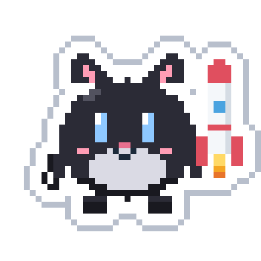

Étude de casCase study05 / 10
Red Bull


Un site produit pour Red Bull, en 3D temps réel : la canette originale et neuf éditions, à faire tourner, comparer et ouvrir une par une. A product site for Red Bull in real-time 3D: the original can and nine editions, to spin, compare and open one by one.
Un exercice de site produit premium, dans l'esprit des sites de marques de boissons qui misent tout sur la canette en 3D. Pas de photo ni de modèle 3D acheté : la canette et ses étiquettes sont générées en code, et l'objectif était qu'on les confonde avec les vraies.
An exercise in premium product sites, in the spirit of drink brands that bet everything on a 3D can. No photos and no bought 3D model: the can and its labels are generated in code, and the goal was for them to pass for the real thing.
Des étiquettes mesurées, pas dessinées à l'œil. Chaque étiquette est dessinée dans un canvas, puis plaquée sur la canette. Les positions viennent de vraies références : photos officielles et étiquettes à plat, avec une correction de la courbure du cylindre pour retrouver les vraies distances en millimètres. Le logo et les taureaux sont recolorés à la volée, et leur placement a été calé par recherche automatique sur l'étiquette de référence.
Labels measured, not eyeballed. Each label is drawn in a canvas, then wrapped onto the can. Positions come from real references: official photos and flat labels, corrected for the cylinder's curvature to get the true distances in millimeters. The logo and bulls are recolored on the fly, and their placement was tuned by automated search against the reference label.
Une canette procédurale. Le profil (53 × 136 mm, format slim) est tourné en géométrie de révolution. L'aluminium est un matériau physique avec vernis et reflets anisotropes, éclairé par une HDRI de studio. Une normal map générée en code ajoute les gouttes de condensation.
A procedural can. The profile (53 × 136 mm, slim format) is lathed into a revolution geometry. The aluminium is a physical material with clearcoat and anisotropic reflections, lit by a studio HDRI. A normal map generated in code adds the condensation drops.
Un scroll qui ne s'arrête jamais entre deux sections. Le scroll natif est désactivé : chaque geste est capté puis converti en un seul pas vers la section suivante, animé par Lenis. Les sections épinglées de GSAP ScrollTrigger (anatomie, éditions) ont leurs propres arrêts, un par info.
Scrolling that never stops between sections. Native scrolling is disabled: each gesture is caught and turned into a single step to the next section, animated by Lenis. The GSAP ScrollTrigger pinned sections (anatomy, editions) have their own stops, one per fact.
Une seule scène pour tout le site. Le canvas WebGL transparent passe au-dessus d'un fond CSS qui change de teinte avec l'édition. Le socle holographique utilise un shader maison, réglé pour fonctionner en mélange additif sur canvas transparent.
One scene for the whole site. The transparent WebGL canvas sits over a CSS background that changes hue with the edition. The holographic pedestal uses a custom shader, tuned to work with additive blending on a transparent canvas.
Des démos générées par script. Un script Puppeteer pilote Chrome sur le vrai site (molette, glisser, clics), puis ffmpeg encode les vidéos de démo en VP9.
Demos generated by script. A Puppeteer script drives Chrome on the real site (wheel, drag, clicks), then ffmpeg encodes the demo videos in VP9.
Fan site non officiel : la marque, le logo et les visuels appartiennent à Red Bull, et le bouton « Trouver un point de vente » est factice. Les étiquettes sont des reconstitutions, pas les fichiers d'origine. La transmission du verre ne marche pas sur un canvas transparent, donc les glaçons et les bulles sont simulés par des reflets. Le site demande un GPU correct : sur un téléphone d'entrée de gamme, le décor 3D peut ralentir. Le JavaScript tient en un seul fichier de 760 Ko, sans découpage, et le site est en français uniquement.
Unofficial fan site: the brand, logo and visuals belong to Red Bull, and the "Find a store" button is a dummy. The labels are reconstructions, not the original files. Glass transmission doesn't work on a transparent canvas, so ice cubes and bubbles are faked with reflections. The site needs a decent GPU: on an entry-level phone the 3D scenery can slow down. The JavaScript ships as a single 760 KB file with no code splitting, and the site is French only.